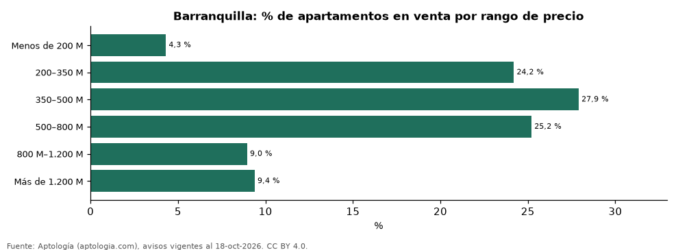

Qué apartamento se compra en Barranquilla en cada rango de precio: tamaño, m² y oferta (octubre 2026)
Estudio con datos abiertos (CC BY 4.0). Versión original: https://github.com/elbroker/aptologia-datos/tree/main/estudios/apartamentos-en-venta-por-rango-de-precio-barranquilla-2026 · DOI: 10.5281/zenodo.23502330
En Barranquilla, el rango de precio con más oferta de apartamentos en venta es 350–500 M de pesos (27,9 % de los avisos), con un área mediana de 96 m². El 28,5 % de la oferta cuesta menos de 350 millones.
Resumen: clasificamos 7.903 apartamentos en venta en Barranquilla en seis rangos de precio pedido.
Actualizado: 18 de octubre de 2026 (datos del 18 de octubre de 2026) · Próxima actualización: mensual.

Resumen
| Indicador | Valor |
|---|---|
| Rango con más oferta | 350–500 M (27,9 %) |
| Menos de 350 millones | 28,5 % |
| Avisos | 7.903 |
Oferta por rango de precio (millones de pesos)
| Rango de precio | % de la oferta | Área mediana (m²) | Precio por m² (mediana) | Habitaciones más comunes | Avisos |
|---|---|---|---|---|---|
| Menos de 200 M | 4,3 % | 57 | 3,29 millones de pesos | 2 hab. | 341 |
| 200–350 M | 24,2 % | 69 | 4,00 millones de pesos | 3 o más hab. | 1.913 |
| 350–500 M | 27,9 % | 96 | 4,34 millones de pesos | 3 o más hab. | 2.206 |
| 500–800 M | 25,2 % | 120 | 5,15 millones de pesos | 3 o más hab. | 1.993 |
| 800 M–1.200 M | 9,0 % | 171 | 5,46 millones de pesos | 3 o más hab. | 708 |
| Más de 1.200 M | 9,4 % | 254 | 6,95 millones de pesos | 3 o más hab. | 742 |
Solo rangos con 30 avisos o más; el área y el m² son medianas dentro de cada rango.
Preguntas frecuentes
¿Cuántos apartamentos de menos de 350 millones hay en Barranquilla? El 28,5 % de la oferta en venta (octubre de 2026); ver el área mediana de cada rango en la tabla.
¿Cuál es el rango de precio más común en Barranquilla? 350–500 M de pesos, con el 27,9 % de los avisos.
Metodología
- Fuente: exportes nocturnos de la base de datos de Aptología (aptologia.com) del 18 de octubre de 2026: avisos vigentes de vivienda en portales inmobiliarios de 13 países, recogidos por Aptología y vistos en línea entre el 11 y el 18 de octubre de 2026. Corte: 18 de octubre de 2026.
- Depuración: se eliminan duplicados exactos (misma ciudad, zona, tipo, precio, moneda, área, habitaciones y baños) y los precios fuera del percentil 1–99 de cada país, operación, moneda y tipo; el precio por m² usa solo avisos con área declarada entre 12 y 2.000 m² y también se recorta al P1–P99.
- Qué se mide: precios pedidos (publicados), no precios de cierre. En arriendo, el canon mensual sin administración, gastos comunes ni condominio.
- Muestra mínima: cada cifra publicada se apoya en al menos 30 avisos; las celdas con menos se omiten.
- Colombia: Precios en pesos colombianos, sin conversión de moneda.
- Limitaciones: la cobertura depende de los portales que recorre Aptología en cada país y es mayor en las ciudades grandes y en los segmentos medio-alto y alto; el área es la que declara el aviso, sin verificar; los nombres de zona vienen de los portales.
- Privacidad: solo se publican agregados; no se publica ningún dato personal, enlace a avisos ni nombre de anunciante.
- Datos abiertos: datos.csv, licencia CC BY 4.0.
Cómo citar
Pinzón Pineda, D. M. (2026). Qué apartamento se compra en Barranquilla en cada rango de precio: tamaño, m² y oferta (octubre 2026). Aptología (aptologia.com). https://github.com/elbroker/aptologia-datos/tree/main/estudios/apartamentos-en-venta-por-rango-de-precio-barranquilla-2026. Datos: datos.csv, licencia CC BY 4.0.